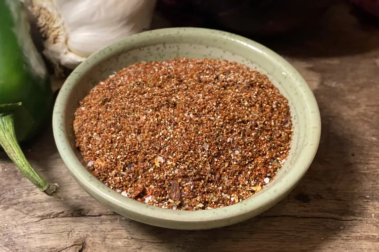

Taco Seasoning
Home

Looking for homemade taco seasoning? Depending on how spicy you and your family like your dishes, use as little
or as much as you want. Store in an airtight container.
Approximate cooking time: 5 mins
Ingredients:
- 1 tablespoon chili powder
- 1 ½ teaspoons ground cumin
- 1 teaspoon sea salt
- 1 teaspoon ground black pepper
- ½ teaspoon ground paprika
- ¼ teaspoon garlic powder
- ¼ teaspoon onion powder
- ¼ teaspoon crushed red pepper flakes
- ¼ teaspoon dried oregano
Steps:
-
Gather all ingredients.
-
Mix together chili powder, cumin, salt, pepper, paprika, garlic powder, onion powder, red pepper flakes,
and oregano in a small bowl.
-
Store in an airtight container.
Back